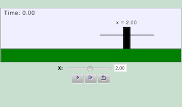

Problem 2.17: Drag the Black Rectangle into Position

A ball is moving towards a black block located at an adjustable
x position. Students are asked to investigate the motion of the ball, and to determine the
time that a collision will occur when the block is at different x positions.